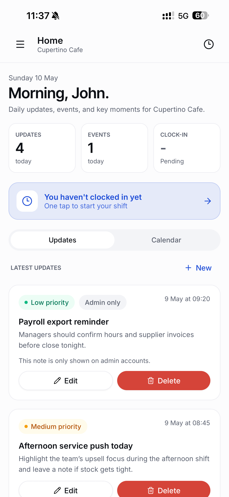
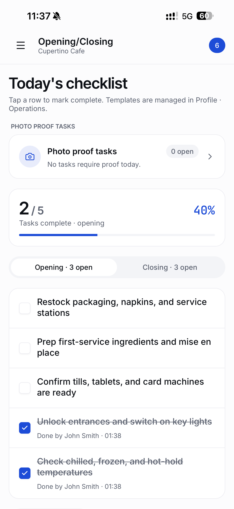
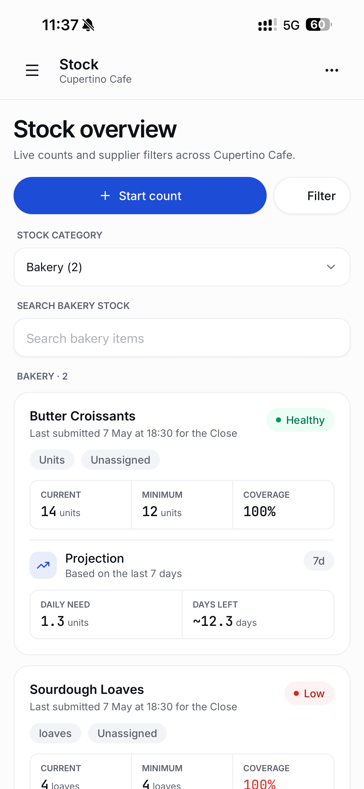
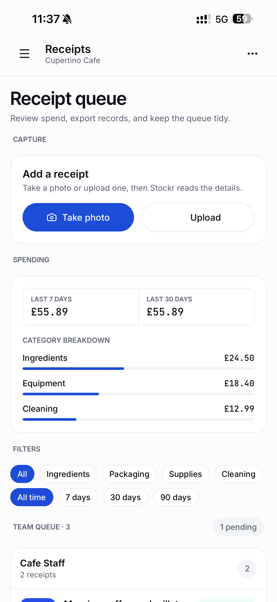
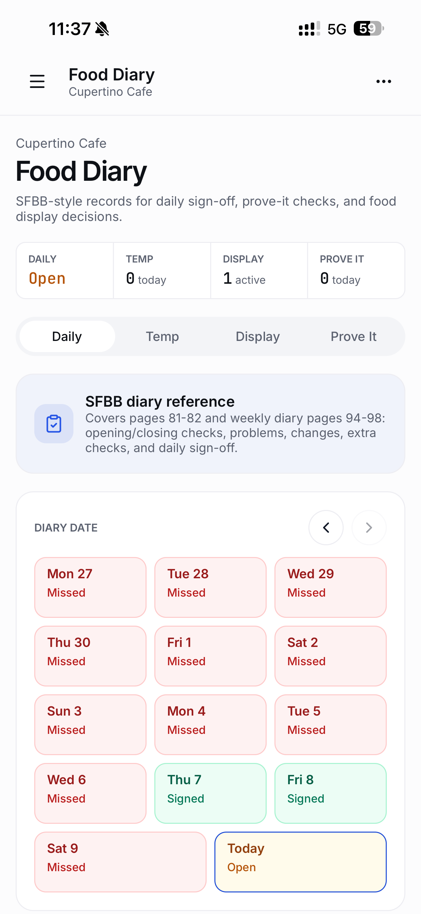
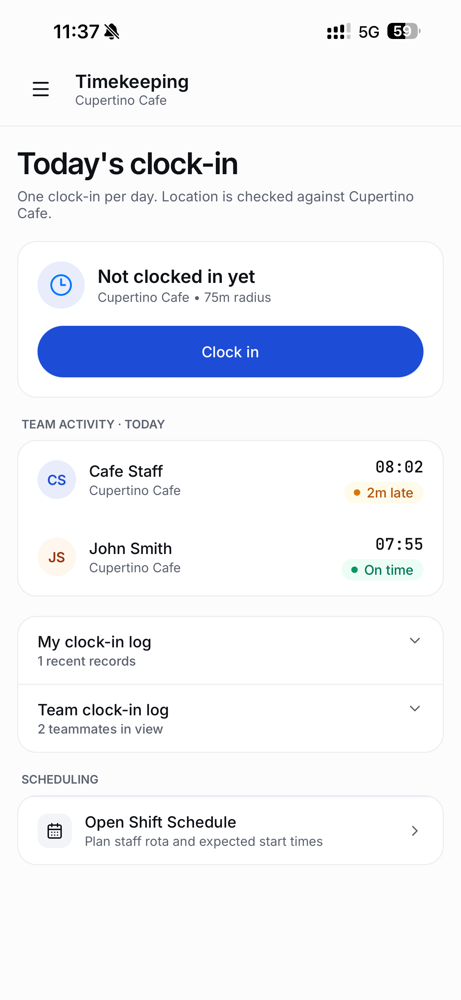
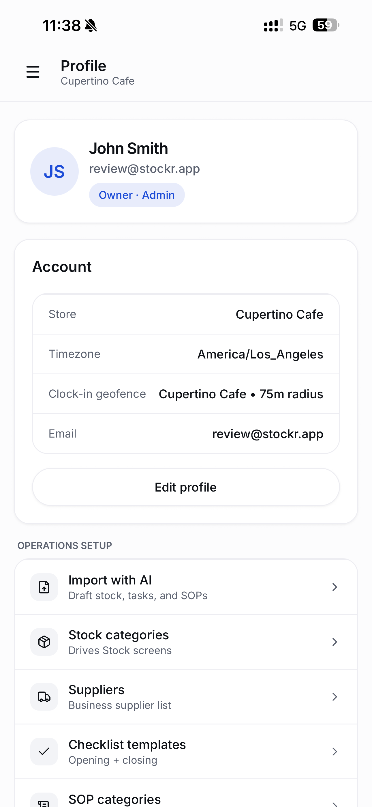

Stock
Live counts from the floor. Suppliers, categories, freshness, and projections in one place.
For cafés · bars · restaurants · bakeries · food trucks
Stockr is a mobile operations workspace for hospitality teams. Keep stock, opening and closing tasks, receipts, SOPs, timekeeping and food diary records in one place.
Launching this week · early access for waitlist members

The shift problem
Stockr puts all of it in one mobile workspace built for the shift, not for a desk.
What's inside
Built around the work hospitality teams already do — just faster, shared, and recorded.
Live counts from the floor. Suppliers, categories, freshness, and projections in one place.
Shared checklists for every shift. Photo-proof tasks. Templates managers actually maintain.
Capture, review, filter, export. Stockr reads amounts, VAT, dates and categories from the photo.
Every procedure searchable on the phone in your team's pocket — opening, closing, safety, training.
One-tap clock-in with geofence. Team activity, lateness, hours — visible to managers in real time.
Daily sign-off, temperature checks, display records, and Prove It evidence. Export when inspected.
Inside the app
Home
Daily updates, priority notes, today's events, and the team's clock-in status. The first thing anyone sees when they open the app.
Opening & closing
Templates managers maintain. Staff tick off as they go. Photo-proof tasks for the ones that matter most.

Stock
Counts from the floor. Categories, suppliers, freshness. Projections based on the last seven days, so you order what you'll actually use.

Receipts
Staff take a photo or upload one. Stockr reads the details. Owners review on their phone between services and export when the accountant calls.

Food diary
SFBB-style daily sign-off. Temperature checks. Display decisions. Prove It evidence for safe methods like cleaning, allergens, and probe calibration.

Timekeeping
One clock-in per day, with location checked against the venue. Live team activity, lateness, and hours — visible to managers, on the same phone.

Operations setup
Stock categories, suppliers, checklist templates, SOP categories, shift labels and food diary equipment — all configured from one place. AI Import drafts your first list.

Built for the team
Join the waitlist
Stockr is launching this week. Join the waitlist for early access and founder pricing — built for independent hospitality teams.
You're #— in line. We'll email when Stockr opens.
Move up the list — share your link:
No spam. We'll only email when there's something to say.
FAQ
Independent cafés, bakeries, restaurants, bars, food trucks and small hospitality groups. Owners and managers who are still close to daily operations and want their team to stay organised during service.
This week. Joining the waitlist gets you early access ahead of the public launch, plus founder pricing for waitlist members.
Stockr is mobile-first. We're launching on iPhone first, with Android to follow. The app is designed to be used on the floor, not at a desk.
Around 90 seconds with AI Import — describe your business and Stockr drafts your stock list, opening and closing tasks, and SOPs for you to review. Setting it all up manually takes about 5 minutes.
Yes. Owners and managers get an admin view to maintain templates, approve receipts, and review records. Staff get a focused day-to-day view — stock, tasks, requests, receipts and timekeeping.
Stockr's food diary follows SFBB-style daily sign-off, temperature checks, display records and Prove It evidence. Records can be exported for inspections.